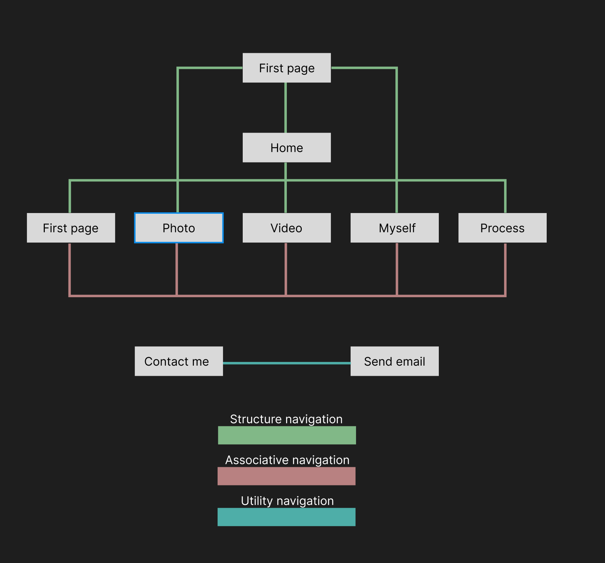

Wireframe Version 1

This is the very first version that I decided to build for my portfolio website. As you can see it is entirely different from the performance of this website. The only things in common are the left-hand-side navigation bar and the video page. Before I start to write the code, the first thing in my mind is to make a novel navigation bar to attract people since the navigation bar of websites is always the same, which is at the top of the website. Therefore, I want to make something different and interesting on my website and I think of this fancy left navigation bar. Additionally, the reason why I keep the carousel for my video page is that there is no other way that is better than the carousel to perform videos. All the other things will be changed in the wireframe version 2.
Wireframe Version 2

This is the second version of my wireframe and it is also the final version. It is not difficult to see that this wireframe matches the website perfectly. Besides the home page, I made another page that is before the home page. I called it the introduction page. This introduction page is used for the users to quickly move to the important pages like the process page and pages about myself except going to the homepage. Also, it will show my skills in learning the CSS and HTML code. On the homepage, I write a sentence to briefly introduce myself so the users will have a basic idea of me and view the pages with it, which will be a better experience. At the same time, I added a form under the brief introduction. It is used for the users to quickly contact me through email and the button under the brief introduction will help the users to skip to the section of the form. On the photo page, I used a kind of gallery instead of simply listing my photos, I gave a name to a certain set of photos or posters. My favourite part of this page is the fixed background image of a real gallery that I take. Users will see different parts of the picture while scrolling down or up on the photo page. This fixed background image is used for separating two sets of photos and the gallery image it showed also refers to the topic of this page. On the video page, I keep the same thing as the first version wireframe and I put three videoes on it. On the page about myself, I almost keep the same format, the change I made is to add another three cards under the first row. The first row is about my education experience and the second row is about my work experience.
Information Architecture

This is the information architecture of my website. The main navigation is associative navigation. The structure is not that much important since every page can switch to each other without getting to the homepage. The links to the home and the other four pages except the introduction page are the only structure. Since I did not make a footer on my website, there is no utility navigation so I put the in-page utility navigation on it.
These are the results of WAVE, the consequences indicate that there are no terrible mistakes in the code of my website. Meanwhile, the structure of the websites is also great since I used several structural elements. The only few errors that WAVE detected are the missing label of the form on the homepage and several empty buttons in the carousel. These problems probably are because of the use of bootstrap. In addition, there are couples of alerts that show things about alternates and head structure, which is the common alerts for websites.
Color theme and others

The main theme of the website is design, I want to create a feeling for the users that I am professional in design through my websites. Therefore, I used some quotation marks and fancy font families on the website to make them look great. I also used lots of bootstraps and some javascript from the outside database on the website to create animation to help me achieve that. Furthermore, the website will respond to different sizes of screen with the grid column elements of bootstrap. The navigation bar only has icons on it without hovering. But the bar will expand while users hover their mouse on it to show them the name of that page. At the same time, I added a hover with remarkable green on the navigation bar to let the users know which one they are choosing now and also, I let the hover effect remains while users are at that specific page to notice which page they are viewing right now. All these elements are to help the users gain an excellent user experience and getting to know me better. In the future, I will improve the website to make it into a real portfolio website that I can use for applying for jobs. I will update the photos I take, videos and posters that I make as well as my education and work experiences.